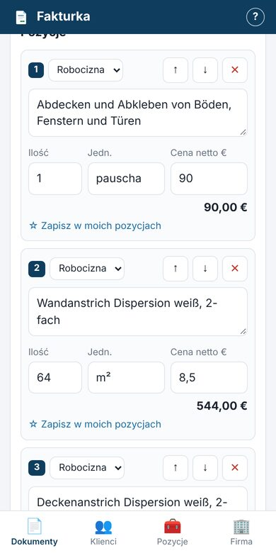
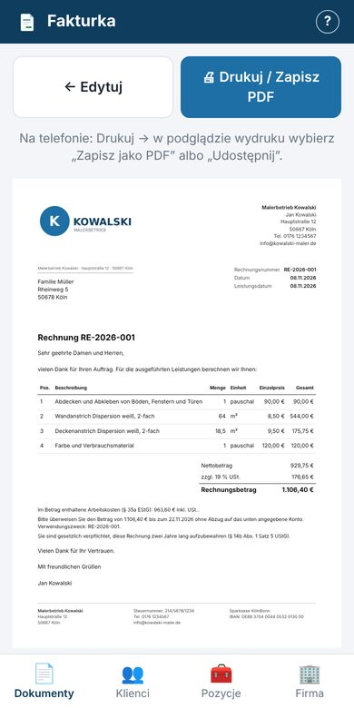
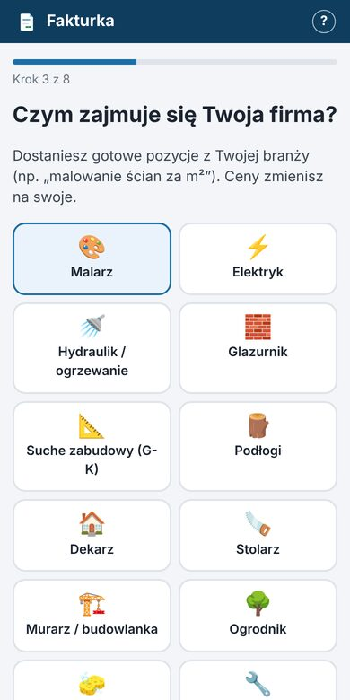
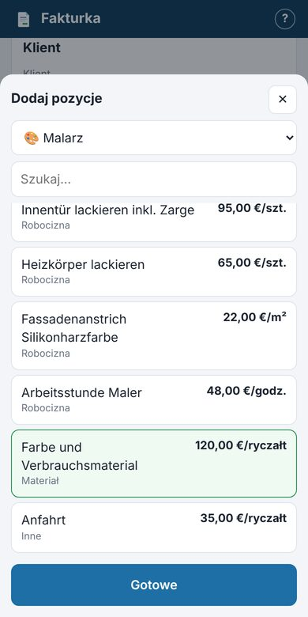

Aplikacja dla polskich firm i rzemieślników w Niemczech. Rechnung i Angebot wystawiasz w 2 minuty – na telefonie, prosto z budowy.


Ty klikasz po polsku, klient dostaje porządny dokument po niemiecku – z wszystkimi obowiązkowymi danymi.
Aplikacja mówi do Ciebie po polsku, a faktura wychodzi po niemiecku. Do wyboru 7 języków – także turecki, rosyjski, włoski i francuski, dla pracowników i klientów z zagranicy.
Malarz, elektryk, glazurnik, dekarz, sprzątanie, przeprowadzki i inne. Gotowe pozycje po niemiecku – zmieniasz tylko ceny.
Klient przyjął Angebot? Jednym kliknięciem robisz z niego Rechnung. Bez przepisywania.
Kleinunternehmer (§19), Reverse Charge w budowlance (§13b), koszty robocizny dla klienta (§35a) – adnotacje dodają się same.
Brakuje Steuernummer, IBAN albo adresu? Aplikacja ostrzeże, zanim wyślesz niepełną fakturę.
Ładny dokument A4 z Twoim logo. Zapisujesz jako PDF i wysyłasz mailem albo przez WhatsApp.
Lista faktur z oznaczeniem „po terminie” i sumą do zapłaty. Koniec z zapomnianymi przelewami.
Wszystko zapisuje się na Twoim urządzeniu. Nie zakładasz konta i nic nie wysyłamy na serwer.
Trzy kroki. Pierwszą ofertę zrobisz, zanim wypijesz kawę.

Przewodnik zapyta o język, branżę, dane firmy i logo. Wszystko wyjaśnia po kolei.

Wybierasz usługi z szablonu swojej branży, wpisujesz ilości – suma i VAT liczą się same.
Podgląd, zapis do PDF i wysyłka do klienta. Gotowe.
Każda branża ma gotowe pozycje w 7 językach. Brakuje Twojej? Napisz do nas.
Krótko i po polsku – co musi być na fakturze, kiedy bez VAT i co zmienia się z e-fakturą.
Tak. W fazie testów korzystasz ze wszystkiego za darmo i bez rejestracji. Jeśli w przyszłości pojawią się płatne funkcje (np. kopia w chmurze albo e-faktury), dowiesz się o tym z wyprzedzeniem.
Tylko na Twoim urządzeniu, w przeglądarce. Nie wysyłamy ich na żaden serwer. Dlatego warto raz w miesiącu pobrać kopię zapasową (zakładka Firma → Kopia zapasowa), zwłaszcza przed zmianą telefonu.
Aplikacja drukuje wszystkie obowiązkowe elementy z § 14 UStG i ostrzega, gdy czegoś brakuje (np. Steuernummer). Za poprawność danych i stawkę podatku odpowiadasz jednak Ty – w razie wątpliwości zapytaj swojego Steuerberatera.
Tak – a także po angielsku, turecku, rosyjsku, włosku i francusku. Ale dla klientów i urzędu skarbowego w Niemczech najbezpieczniej jest po niemiecku. Fakturę w innym języku Finanzamt może poprosić przetłumaczyć. Język wybierasz osobno przy każdym dokumencie.
Tak – w przeglądarce (Safari, Chrome). Możesz dodać ją do ekranu głównego i otwierać jak zwykłą aplikację. Na komputerze działa tak samo.
Jeszcze nie – to następna duża funkcja. Obowiązek wysyłania e-faktur do firm wchodzi w 2027 i 2028 roku. Faktury dla klientów prywatnych mogą dalej być zwykłym PDF.
Nie. Fakturka pomaga wystawiać oferty i faktury. Księgowość, deklaracje podatkowe i porady zostają u Twojego Steuerberatera.